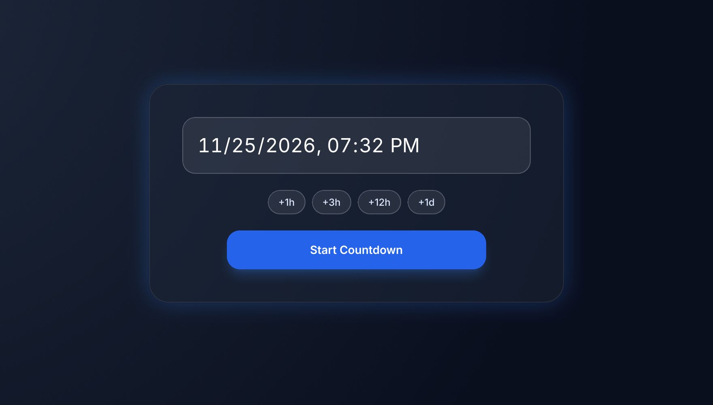

What runs where
Count23 is a statically exported Next.js 16 app with React 19 and TypeScript. The browser handles the countdown and the proposal history. There is no server-side meeting record to update.
Time and proposal links
The picker takes a local date and time. The proposal stores a UTC timestamp and the interface renders that instant in the viewer’s time zone. A link stores a snapshot in its #s= fragment. An edit or confirmation creates a new snapshot. Send the revised link to share that change.
Anyone holding a proposal link can read its contents. Use sample details when demonstrating the project publicly.

Build it
Use Node.js 22 and npm. These commands reproduce the inspected source revision and build a static site under /demos/count23.
git clone https://github.com/waranty-void/count23.git
cd count23
git checkout 605a29b4d150bc3d6837b5eee94eaa14a25b9581
npm ci --ignore-scripts
NEXT_PUBLIC_BASE_PATH=/demos/count23 npm run buildMount the contents of out/ at that same URL prefix, or set an empty base path before building for a domain root. Rebuild when the deployment path changes.
Read the implementation
- TimeInput.tsx handles the picker and time adjustments.
- useCountdown.ts derives the remaining time for the display.
- linkState.ts encodes and reads the proposal in the URL fragment.
What was checked
The public app displayed a running sample countdown in Safari. The pinned source compiled, passed the build’s TypeScript check, and produced an export whose page and twelve referenced assets loaded at the test prefix. Offline use still needs a separate test and a fix for the service worker’s icon paths.
Source and reuse
The organization fork preserves the upstream history and credits. The inspected application revision has no published licence. The new Warranty Void field-guide text and website code carry the MIT licence. The application and its depicted interface retain their existing terms.
Inspected upstream revision · Organization fork · Open the demo